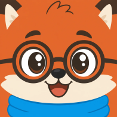

Hier komen de dagelijkse zoektrends rond geschiedenis en leren, voor ads en content.
Voor Quinten en Mike
Gebruikers zijn accounts, geen downloads: downloads houdt Google Play bij en staan niet in Supabase. Actief betekent dat iemand in die periode inlogde, een hoofdstuk las, een verhaal opende, stemde of feedback stuurde — de app openen zonder iets te doen telt (nog) niet mee. Conversie is betalende abonnees (maand + jaar) gedeeld door alle gebruikers; proefperiodes en handmatig premium tellen daar niet in mee.